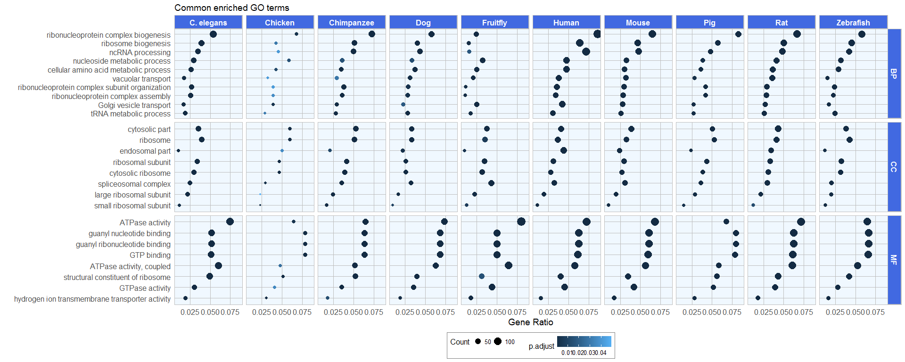

Which genes have homologs in many species?
In Part 1 and Part 2 I have already explored gene homology between humans and other species. But there I have only considered how many genes where shared between the species.
In this post I want to have a closer look at genes with homologs in many species. These genes are likely evolutionarily convserved in their biological function. To find out what biological functions these genes have, I am using gene ontology (GO) enrichment analysis.
Because GO categories have a hierarchical parent-children structure, comparing enriched GO terms between groups of genes in a meaningful way isn’t trivial. Simply calculating the overlap between categories will miss the bigger picture when, e.g. two groups are enriched for closely related but not for exactly the same GO categories. Here, I will explore a few options of visualizing GO enrichment with the purpose of comparing enrichments between groups (here: species).
A network of the partial hierarchical structure of enriched GO terms of biological processes encompasses the information of relatedness between GO terms. Custom annotations show GO terms that were common, as well as terms that were unique to species.
Highly conserved biological functions include core regulatory processes that are essential for the cell cycle, energy production and metabolism, nucleoside biogenesis, protein metabolism, etc.

I’m starting with the same table as from this post, called homologs_table_combined.
head(homologs_table_combined)
## celegans_gene_ensembl cfamiliaris_gene_ensembl
## 1 NA NA
## 2 NA 477699
## 3 NA 477023
## 4 173979 490207
## 5 179795 607852
## 6 177055 NA
## dmelanogaster_gene_ensembl drerio_gene_ensembl ggallus_gene_ensembl
## 1 NA NA NA
## 2 44071 NA NA
## 3 NA 431754 770094
## 4 38864 406283 NA
## 5 36760 794259 395373
## 6 3772179 541489 421909
## hsapiens_gene_ensembl mmusculus_gene_ensembl ptroglodytes_gene_ensembl
## 1 NA NA NA
## 2 2 232345 465372
## 3 30 235674 460268
## 4 34 11364 469356
## 5 47 104112 454672
## 6 52 11431 458990
## rnorvegicus_gene_ensembl scerevisiae_gene_ensembl sscrofa_gene_ensembl
## 1 24152 NA NA
## 2 24153 NA 403166
## 3 24157 854646 100515577
## 4 24158 NA 397104
## 5 24159 854310 NA
## 6 24161 856187 100737301
Each row in this table denotes a gene with its Entrez ID and corresponding Entrez IDs for homologs in each of the other 10 species I explored. If a gene doesn’t have homolog the table says “NA”. However, some genes have duplicate entries for a species if there are multiple homologs in different species.
By counting the number of NAs per row, we can identify genes with homologs in all species (sum of NAs = 0) and genes which are specific (sum of NAs = 10).
homologs_na <- rowSums(is.na(homologs_table_combined))
Before I delve deeper into the biology behind these genes, I want to examine the distribution of the NA-counts. To do so, I am plotting a histogram.
But first I’m preparing my custom ggplot2 theme:
library(ggplot2)
my_theme <- function(base_size = 12, base_family = "sans"){
theme_minimal(base_size = base_size, base_family = base_family) +
theme(
axis.text = element_text(size = 12),
axis.title = element_text(size = 14),
panel.grid.major = element_line(color = "grey"),
panel.grid.minor = element_blank(),
panel.background = element_rect(fill = "aliceblue"),
strip.background = element_rect(fill = "royalblue", color = "grey", size = 1),
strip.text = element_text(face = "bold", size = 12, color = "white"),
legend.position = "bottom",
legend.justification = "top",
legend.box = "horizontal",
legend.box.background = element_rect(colour = "grey50"),
legend.background = element_blank(),
panel.border = element_rect(color = "grey", fill = NA, size = 0.5)
)
}
theme_set(my_theme())
ggplot() +
aes(homologs_na) +
geom_histogram(binwidth = 1, color = "royalblue", fill = "royalblue", alpha = 0.8) +
labs(
x = "Number of NAs per row of gene homology table",
y = "Count",
title = "How many homologs do genes have?",
subtitle = "Showing all bins from 0 to 10",
caption = "\nEach row of the gene homology table list a gene and all its homologs in 10 other species.
If a gene doesn't have a homolog, its value in the table is NA. Thus, rows with many NAs refer to a
gene that is specific to one species, while rows with no NAs show genes with homologs in all species -
such genes are said to be highly conserved."
)

Clearly, most genes are specific to a species, they have NAs in all but one column. The rest of the histogram is a bit hard to differentiate with the peak at 10, so let’s look at the same data again with these genes:
ggplot() +
aes(subset(homologs_na, homologs_na < 10)) +
geom_histogram(binwidth = 1, color = "royalblue", fill = "royalblue", alpha = 0.8) +
labs(
x = "Number of NAs per row of gene homology table",
y = "Count",
title = "How many homologs do genes have?",
subtitle = "Showing bins from 0 to 9",
caption = "\nEach row of the gene homology table list a gene and all its homologs in 10 other species.
If a gene doesn't have a homolog, its value in the table is NA. Thus, rows with many NAs refer to a
gene that is specific to one species, while rows with no NAs show genes with homologs in all species -
such genes are said to be highly conserved."
)

Now we can see that most genes have homologs in 9 species (2 NAs). But there are still quite a few genes with homologs in all species.
Which genes are highly conserved and what biological functions do they have?
There are 3461 rows in the original table with no NAs.
genes_homologs_all <- homologs_table_combined[which(rowSums(is.na(homologs_table_combined)) == 0), ]
nrow(genes_homologs_all)
## [1] 3461
Looking at all of these genes by hand wouldn’t be feasible. So, to find out what biological functions these genes have, I am using gene ontology (GO-term) enrichment analysis as implemented in clusterProfiler.
- Biological processes (BP): Collections of molecular events and functions contributing to a biological process
- Cellular component (CC): (sub-) cellular structures and locations, macromolecular complexes
- Molecular functions (MF): Molecular functions like catalytic or binding activity
library(clusterProfiler)
library(DOSE)
for (i in 1:nrow(datasets)) {
species <- datasets$dataset[i]
genes <- as.character(unique(genes_homologs_all[, species]))
universe <- as.character(unique(na.omit(homologs_table_combined[, species])))
cat("\nSpecies", datasets$description[i], "has", length(universe), "unique Entrez IDs, of which", length(genes), "have homologs in all species.\n")
try(go_enrich_BP <- enrichGO(gene = genes,
keytype = "ENTREZID",
OrgDb = get(datasets$orgDb[i]),
ont = "BP",
qvalueCutoff = 0.05,
universe = universe,
readable = TRUE))
try(go_enrich_MF <- enrichGO(gene = genes,
keytype = "ENTREZID",
OrgDb = get(datasets$orgDb[i]),
ont = "MF",
qvalueCutoff = 0.05,
universe = universe,
readable = TRUE))
try(go_enrich_CC <- enrichGO(gene = genes,
keytype = "ENTREZID",
OrgDb = get(datasets$orgDb[i]),
ont = "CC",
qvalueCutoff = 0.05,
universe = universe,
readable = TRUE))
try(assign(paste("go_enrich_BP", species, sep = "_"), go_enrich_BP))
try(assign(paste("go_enrich_MF", species, sep = "_"), go_enrich_MF))
try(assign(paste("go_enrich_CC", species, sep = "_"), go_enrich_CC))
}
##
## Species Rat has 47989 unique Entrez IDs, of which 1796 have homologs in all species.
##
## Species Yeast has 6350 unique Entrez IDs, of which 1363 have homologs in all species.
##
## Error in .testForValidCols(x, cols) :
## Invalid columns: SYMBOL. Please use the columns method to see a listing of valid arguments.
## Error in .testForValidCols(x, cols) :
## Invalid columns: SYMBOL. Please use the columns method to see a listing of valid arguments.
## Error in .testForValidCols(x, cols) :
## Invalid columns: SYMBOL. Please use the columns method to see a listing of valid arguments.
##
## Species C. elegans has 46727 unique Entrez IDs, of which 1758 have homologs in all species.
##
## Species Chimpanzee has 40540 unique Entrez IDs, of which 1704 have homologs in all species.
##
## Species Pig has 54622 unique Entrez IDs, of which 1708 have homologs in all species.
##
## Species Human has 60136 unique Entrez IDs, of which 1757 have homologs in all species.
##
## Species Chicken has 34668 unique Entrez IDs, of which 1684 have homologs in all species.
##
## Species Zebrafish has 47900 unique Entrez IDs, of which 1910 have homologs in all species.
##
## Species Fruitfly has 25038 unique Entrez IDs, of which 1805 have homologs in all species.
##
## Species Mouse has 68603 unique Entrez IDs, of which 1761 have homologs in all species.
##
## Species Dog has 31376 unique Entrez IDs, of which 1716 have homologs in all species.
I’m not sure why yeast throws an error but since all other species worked I will ignore yeast genes for now…
Visualizing enriched GO categories
A heatmap of gene enrichment ratios shows enriched GO categories and their enrichment strength and allows us to capture comparable information for all species.
To generate this heatmap, I am using the output tables from clusterProfiler, which tell us the enrichment p-value (before and after correction for multiple testing, aka False Discovery Rate or FDR), the proportion of genes belonging to each GO category in the background versus all background genes and in our gene list compared to all genes in our list. To keep the graph reasonably small, I’m subsetting only the top 10 enriched genes with lowest adjusted p-values for biological processes (BP), molecular functions (MF) and cellular components (CC).
# removing yeast
datasets_2 <- datasets[-grep("scerevisiae_gene_ensembl", datasets$dataset), ]
library(dplyr)
cutoff = 10
for (i in 1:nrow(datasets_2)) {
species <- datasets_2$dataset[i]
go_enrich_BP_df <- as.data.frame(get(paste("go_enrich_BP", species, sep = "_"))) %>%
mutate(GR = as.numeric(Count) / as.numeric(gsub(".*/", "", GeneRatio)),
Category = "BP")
plot_BP <- go_enrich_BP_df[1:cutoff, ]
plot_BP$Description <- factor(plot_BP$Description, levels = plot_BP$Description[order(plot_BP$GR)])
go_enrich_MF_df <- as.data.frame(get(paste("go_enrich_MF", species, sep = "_"))) %>%
mutate(GR = as.numeric(Count) / as.numeric(gsub(".*/", "", GeneRatio)),
Category = "MF")
plot_MF <- go_enrich_MF_df[1:cutoff, ]
plot_MF$Description <- factor(plot_MF$Description, levels = plot_MF$Description[order(plot_MF$GR)])
go_enrich_CC_df <- as.data.frame(get(paste("go_enrich_CC", species, sep = "_"))) %>%
mutate(GR = as.numeric(Count) / as.numeric(gsub(".*/", "", GeneRatio)),
Category = "CC")
plot_CC <- go_enrich_CC_df[1:cutoff, ]
plot_CC$Description <- factor(plot_CC$Description, levels = plot_CC$Description[order(plot_CC$GR)])
plot <- rbind(plot_BP, plot_MF, plot_CC)
plot$Species <- paste(datasets_2$description[i])
if (i == 1) {
plot_df <- plot
} else {
plot_df <- rbind(plot_df, plot)
}
}
length(unique(plot_df$ID))
## [1] 123
ggplot(plot_df, aes(x = Species, y = Description, fill = GR)) +
geom_tile(width = 1, height = 1) +
scale_fill_gradient2(low = "white", mid = "blue", high = "red", space = "Lab", name = "Gene Ratio") +
facet_grid(Category ~ ., scales = "free_y") +
scale_x_discrete(position = "top") +
labs(
title = paste("Top", cutoff, "enriched GO terms"),
x = "",
y = ""
)

Word clouds
Another way to capture information about GO terms is to use the GO description texts as basis for wordclouds. I’m using the general method described here. I’m also included a list of words to remove, like process, activity, etc. These words occur often and on their own don’t tell us much about the GO term.
library(tm)
library(SnowballC)
library(wordcloud)
library(RColorBrewer)
wordcloud_function <- function(data = data,
removewords = c("process", "activity", "positive", "negative", "response", "regulation"),
min.freq = 4,
max.words=Inf,
random.order=TRUE){
input <- Corpus(VectorSource(data))
input <- tm_map(input, content_transformer(tolower))
input <- tm_map(input, content_transformer(removePunctuation))
input <- tm_map(input, removeNumbers)
input <- tm_map(input, stripWhitespace)
toSpace <- content_transformer(function(x , pattern ) gsub(pattern, " ", x))
input <- tm_map(input, toSpace, "/")
input <- tm_map(input, toSpace, "@")
input <- tm_map(input, toSpace, "\\|")
input <- tm_map(input, function(x) removeWords(x, stopwords("english")))
# specify your stopwords as a character vector
input <- tm_map(input, removeWords, removewords)
tdm <- TermDocumentMatrix(input)
m <- as.matrix(tdm)
v <- sort(rowSums(m),decreasing = TRUE)
d <- data.frame(word = names(v),freq = v)
set.seed(1234)
wordcloud(words = d$word, freq = d$freq, min.freq = min.freq, scale = c(8,.2),
max.words = max.words, random.order = random.order, rot.per = 0.15,
colors = brewer.pal(8, "Dark2"))
}
layout(matrix(c(1:80), nrow = 4, byrow = FALSE), heights = c(0.1, 1))
for (i in 1:nrow(datasets_2)) {
species <- datasets_2$dataset[i]
df_BP <- as.data.frame(get(paste("go_enrich_BP", species, sep = "_")))
df_MF <- as.data.frame(get(paste("go_enrich_MF", species, sep = "_")))
df_CC <- as.data.frame(get(paste("go_enrich_CC", species, sep = "_")))
par(mar = rep(0, 4))
plot.new()
text(x = 0.5, y = 0.5, paste0(datasets_2$description[i]), cex = 2)
wordcloud_function(data = df_BP$Description)
wordcloud_function(data = df_MF$Description)
wordcloud_function(data = df_CC$Description)
}

Which GO terms are enriched in all species?
I also want to know which specific GO categories are enriched in all species. Even though we might miss related terms, this will give us a first idea about the biological functions that are highly conserved between species.
I’m creating a list of enriched GO categories of all species and ask for common elements using the list.common function of the rlist package.
# create empty list to populate with a loop
go_list_BP <- lapply(datasets_2$dataset, function(x) NULL)
names(go_list_BP) <- paste(datasets_2$dataset)
for (species in datasets_2$dataset) {
df_BP <- as.data.frame(get(paste("go_enrich_BP", species, sep = "_")))
go_list_BP[[species]] <- df_BP$ID
}
# Now I know which GO IDs are common but I want to know the description as well.
# Because they are in all go_enrich tables, I'm chosen one to subset
library(rlist)
common_gos_BP <- as.data.frame(go_enrich_BP_cfamiliaris_gene_ensembl) %>%
filter(ID %in% list.common(go_list_BP)) %>%
select(ID, Description) %>%
arrange(Description)
go_list_MF <- lapply(datasets_2$dataset, function(x) NULL)
names(go_list_MF) <- paste(datasets_2$dataset)
for (species in datasets_2$dataset) {
df_MF <- as.data.frame(get(paste("go_enrich_MF", species, sep = "_")))
go_list_MF[[species]] <- df_MF$ID
}
library(rlist)
common_gos_MF <- as.data.frame(go_enrich_MF_cfamiliaris_gene_ensembl) %>%
filter(ID %in% list.common(go_list_MF)) %>%
select(ID, Description) %>%
arrange(Description)
go_list_CC <- lapply(datasets_2$dataset, function(x) NULL)
names(go_list_CC) <- paste(datasets_2$dataset)
for (species in datasets_2$dataset) {
df_CC <- as.data.frame(get(paste("go_enrich_CC", species, sep = "_")))
go_list_CC[[species]] <- df_CC$ID
}
library(rlist)
common_gos_CC <- as.data.frame(go_enrich_CC_cfamiliaris_gene_ensembl) %>%
filter(ID %in% list.common(go_list_CC)) %>%
select(ID, Description) %>%
arrange(Description)
To visualize these common GO categories, I’m going back to the clusterProfiler output tables. This time I’m not using a heatmap, but a point plot to show enrichment statistics for all species.
for (i in 1:nrow(datasets_2)) {
species <- datasets_2$dataset[i]
go_enrich_BP_df <- as.data.frame(get(paste("go_enrich_BP", species, sep = "_"))) %>%
filter(ID %in% list.common(go_list_BP)) %>%
mutate(GR = as.numeric(Count) / as.numeric(gsub(".*/", "", GeneRatio)),
Category = "BP")
go_enrich_BP_df$Description <- factor(go_enrich_BP_df$Description, levels = go_enrich_BP_df$Description[order(go_enrich_BP_df$GR)])
go_enrich_MF_df <- as.data.frame(get(paste("go_enrich_MF", species, sep = "_"))) %>%
filter(ID %in% list.common(go_list_MF)) %>%
mutate(GR = as.numeric(Count) / as.numeric(gsub(".*/", "", GeneRatio)),
Category = "MF")
go_enrich_MF_df$Description <- factor(go_enrich_MF_df$Description, levels = go_enrich_MF_df$Description[order(go_enrich_MF_df$GR)])
go_enrich_CC_df <- as.data.frame(get(paste("go_enrich_CC", species, sep = "_"))) %>%
filter(ID %in% list.common(go_list_CC)) %>%
mutate(GR = as.numeric(Count) / as.numeric(gsub(".*/", "", GeneRatio)),
Category = "CC")
go_enrich_CC_df$Description <- factor(go_enrich_CC_df$Description, levels = go_enrich_CC_df$Description[order(go_enrich_CC_df$GR)])
plot <- rbind(go_enrich_BP_df, go_enrich_MF_df, go_enrich_CC_df)
plot$Species <- paste(datasets_2$description[i])
if (i == 1) {
plot_df <- plot
} else {
plot_df <- rbind(plot_df, plot)
}
}
ggplot(plot_df, aes(x = GR, y = Description, size = Count, color = p.adjust)) +
geom_point() +
labs(
title = "Common enriched GO terms",
x = "Gene Ratio",
y = ""
) +
facet_grid(Category ~ Species, scales = "free_y")

Gene Ratio is shown on the x-axis, point size shows the gene counts and point color shows the adjusted p-value.
GO hierachical structure
The package RamiGO can be used to plot all parents of the 10 common GO categories:
library(RamiGO)
library(RColorBrewer)
set3 <- brewer.pal(10, "Set3")
goIDs <- list.common(go_list_BP)
getAmigoTree(goIDs, set3, filename = "common_gos_BP", picType = "png", modeType = "amigo", saveResult = TRUE)
set3 <- brewer.pal(8, "Set3")
goIDs <- list.common(go_list_MF)
getAmigoTree(goIDs, set3, filename = "common_gos_MF", picType = "png", modeType = "amigo", saveResult = TRUE)
goIDs <- list.common(go_list_CC)
getAmigoTree(goIDs, set3, filename = "common_gos_CC", picType = "png", modeType = "amigo", saveResult = TRUE)
- Common GOs BP

- Common GOs MF

- Common GOs CC

GO network
To visualize clusters of species-specific and common enriched GO categories within their hierachical structure, I’m creating a network of the top 15 enriched biological process categories of each species with two levels of parent terms.
for (i in 1:nrow(datasets_2)) {
species <- datasets_2$dataset[i]
df_BP <- as.data.frame(get(paste("go_enrich_BP", species, sep = "_")))
df_BP <- df_BP[1:15, 1, drop = FALSE]
df_BP$species <- datasets_2$description[i]
if (i == 1) {
df_BP_all <- df_BP
} else {
df_BP_all <- rbind(df_BP_all, df_BP)
}
}
length(unique(df_BP_all$ID))
## [1] 69
Of these top GO categories most are not unique to individual species.
In the network I want to show GO categories that are species-specific and those that are common among all species. To create the annotation data with this information I’m creating a dataframe with the names of the species along with their specific GO term and combine this with the common GO terms from above.
library(tidyr)
df_BP_all$value <- 1
df_BP_all <- spread(df_BP_all, species, value)
go_sums <- data.frame(ID = df_BP_all$ID,
sum = rowSums(!is.na(df_BP_all[, -1])))
# GO in all species
go_anno <- data.frame(ID = go_sums$ID)
go_anno$group <- ifelse(go_sums$sum == 10, "common_all", NA)
x <- subset(go_sums, sum == 1)
xx <- subset(df_BP_all, ID %in% x$ID)
for (i in 2:11) {
xxx <- xx[, i]
xxx[which(!is.na(xxx))] <- colnames(xx[, i, drop = FALSE])
unique <- as.data.frame(cbind(xx[, 1], xxx)) %>%
subset(!is.na(xxx))
if (i == 2) {
unique_all <- unique
} else {
unique_all <- rbind(unique_all, unique)
}
}
# Common GOs
unique_common_all <- rbind(unique_all, data.frame(V1 = list.common(go_list_BP), xxx = "common"))
To identify the parent GO terms, I’m using the GO.db package. I’m adding two levels of parental structure for each GO term.
library(GO.db)
# GO parents list
ontology <- as.list(GOBPPARENTS)
goChilds <- unique(df_BP_all$ID)
goChilds <- goChilds[goChilds %in% names(ontology)]
adjList <- matrix(nrow = 0, ncol = 3)
colnames(adjList) <- c("parent", "rel", "child")
# Find parents
goChilds <- goChilds[which(goChilds != "all")]
goFamilyList <- lapply(ontology[goChilds], function(x) data.frame(parent = x, rel = names(x)))
adjList <- rbind(adjList, as.matrix(cbind(do.call(rbind, goFamilyList), child = rep(names(goFamilyList), sapply(goFamilyList, nrow)))))
# Next parents
goParents <- unique(as.character(adjList[which(!adjList[,"parent"] %in% adjList[,"child"]), "parent"]))
goFamilyList_2 <- lapply(ontology[goParents], function(x) data.frame(parent = x, rel = names(x)))
adjList <- rbind(adjList, as.matrix(cbind(do.call(rbind, goFamilyList_2), child = rep(names(goFamilyList_2), sapply(goFamilyList_2, nrow)))))
adjList <- adjList[which(adjList[,1] != "all"), , drop = FALSE]
adjList <- adjList[, c("child","parent", "rel"), drop = FALSE]
The graph is then prodcued with igraph as a directed network. Colors show species-specific, common and remaining enriched GO categories. Parents are shown in light blue.
library(igraph)
goGraph <- graph.edgelist(adjList[, c("parent", "child"), drop = FALSE], directed = TRUE)
goGraph <- set.edge.attribute(goGraph, "type", value = adjList[,"rel"])
goTerms <- sapply(V(goGraph)$name, function(x)
{
term <- GOTERM[[x]]@Term
term <- gsub("( process)$", " pr.", term)
term <- gsub(" development ", " dev. ", term)
term <- gsub("( development)$", " dev.", term, perl = TRUE)
term <- gsub("Development ", "Dev. ", term)
# split in two lines
spaceLoc <- gregexpr(" ", term, fixed = TRUE)[[1]]
if ((spaceLoc[1] != -1) && (length(spaceLoc) > 1))
{
spaceLoc <- spaceLoc[ceiling(length(spaceLoc)/2)]
term <- paste(substr(term, 1, spaceLoc - 1), substr(term, spaceLoc + 1, nchar(term)), sep = "\n")
}
term
})
goTerms_df <- as.data.frame(goTerms)
goTerms_df$color <- ifelse(rownames(goTerms_df) %in% unique_common_all[which(unique_common_all$xxx == "C. elegans"), 1], "green",
ifelse(rownames(goTerms_df) %in% unique_common_all[which(unique_common_all$xxx == "Chicken"), 1], "yellowgreen",
ifelse(rownames(goTerms_df) %in% unique_common_all[which(unique_common_all$xxx == "Chimpanzee"), 1], "violetred",
ifelse(rownames(goTerms_df) %in% unique_common_all[which(unique_common_all$xxx == "Dog"), 1], "turquoise",
ifelse(rownames(goTerms_df) %in% unique_common_all[which(unique_common_all$xxx == "Fruitfly"), 1], "violet",
ifelse(rownames(goTerms_df) %in% unique_common_all[which(unique_common_all$xxx == "Human"), 1], "thistle",
ifelse(rownames(goTerms_df) %in% unique_common_all[which(unique_common_all$xxx == "Mouse"), 1], "tan1",
ifelse(rownames(goTerms_df) %in% unique_common_all[which(unique_common_all$xxx == "Pig"), 1], "steelblue",
ifelse(rownames(goTerms_df) %in% unique_common_all[which(unique_common_all$xxx == "Rat"), 1], "orangered",
ifelse(rownames(goTerms_df) %in%
unique_common_all[which(unique_common_all$xxx == "Zebrafish"), 1], "olivedrab",
ifelse(rownames(goTerms_df) %in%
unique_common_all[which(unique_common_all$xxx == "common"), 1], "cyan",
ifelse(rownames(goTerms_df) %in% goChilds, "red", "skyblue2"))))))))))))
V(goGraph)$color <- adjustcolor(goTerms_df$color, alpha.f = 0.8)
V(goGraph)$label <- goTerms
Ecolor <- ifelse(E(goGraph)$type == "is_a", "slategrey",
ifelse(E(goGraph)$type == "part_of", "springgreen4",
ifelse(E(goGraph)$type == "regulates", "tomato",
ifelse(E(goGraph)$type == "negatively_regulates", "orange", "greenyellow"))))
E(goGraph)$color <- Ecolor
plot(goGraph,
vertex.label.color = "black",
vertex.label.cex = 0.8,
vertex.size = 2,
margin = 0)
labels <- c("C. elegans", "Chicken", "Chimpanzee", "Dog", "Fruitfly", "Human", "Mouse", "Pig", "Rat", "Zebrafish", "common", "other enriched GO", "parent")
colors <- c("green", "yellowgreen", "violetred", "turquoise", "violet", "thistle", "tan1", "steelblue", "orangered", "olivedrab", "cyan", "red", "skyblue2")
legend("topleft", labels, pch = 19,
col = colors, pt.cex = 2, cex = 2, bty = "n", ncol = 2)
For the output network graph, see summary at the beginning of this post.
sessionInfo()
## R version 3.3.2 (2016-10-31)
## Platform: x86_64-w64-mingw32/x64 (64-bit)
## Running under: Windows 7 x64 (build 7601) Service Pack 1
##
## locale:
## [1] LC_COLLATE=English_United States.1252
## [2] LC_CTYPE=English_United States.1252
## [3] LC_MONETARY=English_United States.1252
## [4] LC_NUMERIC=C
## [5] LC_TIME=English_United States.1252
##
## attached base packages:
## [1] parallel stats4 stats graphics grDevices utils datasets
## [8] methods base
##
## other attached packages:
## [1] igraph_1.0.1 GO.db_3.4.0 tidyr_0.6.0
## [4] RamiGO_1.20.0 gsubfn_0.6-6 proto_1.0.0
## [7] rlist_0.4.6.1 wordcloud_2.5 RColorBrewer_1.1-2
## [10] SnowballC_0.5.1 tm_0.6-2 NLP_0.1-9
## [13] dplyr_0.5.0 clusterProfiler_3.2.9 DOSE_3.0.9
## [16] ggplot2_2.2.1 org.Cf.eg.db_3.4.0 org.Mm.eg.db_3.4.0
## [19] org.Dm.eg.db_3.4.0 org.Dr.eg.db_3.4.0 org.Gg.eg.db_3.4.0
## [22] org.Hs.eg.db_3.4.0 org.Ss.eg.db_3.4.0 org.Pt.eg.db_3.4.0
## [25] org.Ce.eg.db_3.4.0 org.Sc.sgd.db_3.4.0 org.Rn.eg.db_3.4.0
## [28] AnnotationDbi_1.36.0 IRanges_2.8.1 S4Vectors_0.12.1
## [31] Biobase_2.34.0 BiocGenerics_0.20.0 biomaRt_2.30.0
##
## loaded via a namespace (and not attached):
## [1] Rcpp_0.12.8 png_0.1-7 assertthat_0.1
## [4] rprojroot_1.1 digest_0.6.11 slam_0.1-40
## [7] R6_2.2.0 plyr_1.8.4 backports_1.0.4
## [10] RSQLite_1.1-1 evaluate_0.10 lazyeval_0.2.0
## [13] data.table_1.10.0 qvalue_2.6.0 rmarkdown_1.3
## [16] labeling_0.3 splines_3.3.2 BiocParallel_1.8.1
## [19] RCytoscape_1.24.1 stringr_1.1.0 RCurl_1.95-4.8
## [22] munsell_0.4.3 fgsea_1.0.2 htmltools_0.3.5
## [25] tcltk_3.3.2 tibble_1.2 gridExtra_2.2.1
## [28] codetools_0.2-15 XML_3.98-1.5 bitops_1.0-6
## [31] grid_3.3.2 gtable_0.2.0 DBI_0.5-1
## [34] magrittr_1.5 scales_0.4.1 graph_1.52.0
## [37] stringi_1.1.2 GOSemSim_2.0.3 reshape2_1.4.2
## [40] DO.db_2.9 fastmatch_1.0-4 tools_3.3.2
## [43] yaml_2.1.14 colorspace_1.3-2 memoise_1.0.0
## [46] knitr_1.15.1 XMLRPC_0.3-0